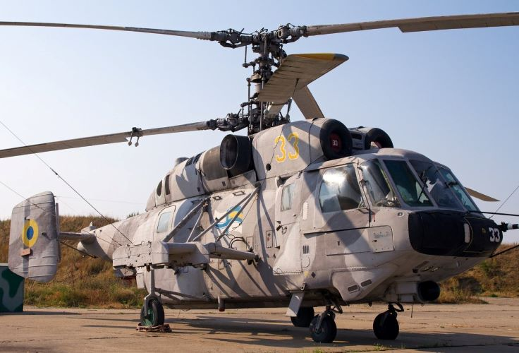
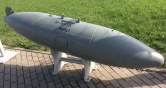

Ка-29
Ка-29(Helix-B за класифікацією НАТО)
Ка-29 - радянський корабельний транспортно-бойовий вертоліт, подальший розвиток вертольота Ка-27. Розроблено в ОКБ ім. Н. І. Камова на початку 1980-х років і призначений для десантування з кораблів підрозділів морської піхоти і їх вогневої підтримки, транспортування різних вантажів та ін.
Транспортно-бойовий вертоліт створювався за програмою переозброєння морської піхоти, зокрема сучасними засобами доставки. При створенні вертольота враховувався бойовий досвід морської піхоти ймовірного супротивника, насамперед корейської та в'єтнамської воєн.
Вертоліт розроблявся на базі створюваного на той час протичовнового та пошуково-рятувального Ка-27.
Перший політ прототипу з бортовим номером «208», що мав позначення Ка-252ТБ, відбувся 28 липня 1976 року.
Гелікоптер Ка-29 призначений для тривалого базування на кораблі, тому в конструкції широко застосовуються антикорозійні матеріали. Силова установка та трансмісія не відрізняються від Ка-27.
Основною зовнішньою відмінністю Ка-29 від Ка-27 є розширена на 500 мм носова частина кабіни з трьома плоскими бронесклом замість двох подвійної кривизни у останнього.
Вертоліт Ка-29 може експлуатуватися у двох основних варіантах: транспортному або бойовому, та призначений для десантування з кораблів підрозділів морської піхоти, перевезення вантажів, військової техніки на зовнішній підвісці, а також вогневої підтримки морської піхоти, знищення живої сили, техніки та берегових укріплень противника . Може бути використаний для медичної евакуації, перекидання особового складу, вантажів з плавбаз та суден постачання на бойові кораблі.
У транспортному варіанті гелікоптер здатний взяти на борт до 16 десантників з особистою зброєю, або 10 поранених, включаючи чотирьох на ношах, або до 2000 кг вантажу в транспортній кабіні, або до 4000 кг вантажу на зовнішній підвісці. На гелікоптері може бути встановлена лебідка вантажопідйомністю до 300 кг. Доступ десанту у вантажну кабіну виконаний через двоє двостулкових дверей зліва та праворуч фюзеляжу.
ЛТХ Ка-29
Екіпаж - 2 чол
Двигуни типу ТВД ТВ3-117В - 2 по 2250кс
Максимальна швидкість – 280км/год
Крейсерська швидкість – 235км/год
Статистична стеля – 3700м
Динамічна стеля – 4300м
Дальність перегону – 740км
Дальність дії – 460км
Максимальна злітна маса – 11500кг
Нормальна злітна маса – 11000кг
Максимальне бойове навантаження - 1850кг
Кількість перевозимих людей – 16 десантників
Кількість перевозимих людей – 10 поранених
Габарити вертольота:
Діаметр несучих гвинтів – 15,9м
Довжина – 12,25м
Висота – 5,44м
Ширина – 3,8м
Озброєння
Ка-29 є носієм не лише стрілецько-гарматного озброєння та протитанкових комплексів. До складу озброєння входять також підвісні пускові установки некерованих ракет калібром 57 та 80мм. На пілонах вертольота можуть підвішуватися також баки із запальною сумішшю.
Курсове озброєння
Основним озброєнням Ка-29 є чотириствольний авіаційний кулемет 9-A-622 калібру 7,62 мм в рухомій установці з боєзапасом 1800 патронів.
Підвісне озброєння
На фермах гелікоптера розміщуються 4 вузли підвіски.
Серед підвісного озброєння є блоки НАР, зокрема НАРи: 55мм С-5, 80мм С-8, ПТРК Штурм-В з ПТКР "Кокон" або "Атака", ЗБ-500 та контейнери УПК-23-250 з 23-мм гарматою ГШ-23Л і 250 набоями.


НАРи: 55мм С-5, 80мм С-8
Для запуску НАРів використовуються різноманітні ПУ:
УВ-32-57
УВ-20-57
УВ-20-80


УВ-32-57 та УВ-20-80
ЗБ-500